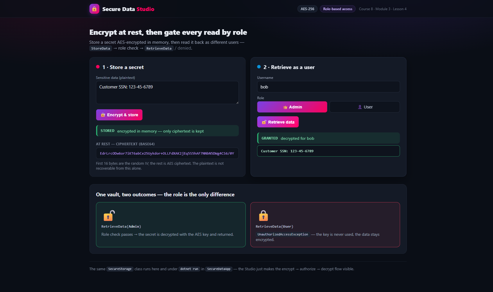

Course 8 — Security & Authentication · Module 3 · Lesson 4 You Try It!
Store sensitive data encrypted at rest with AES, then gate every
read behind a role check so only an Admin can decrypt it. The crypto and
authorization logic live in one reusable SecureStorage class, exercised three ways: a
console demo, an xUnit test suite, and an interactive Blazor Studio.
Implement secure data storage techniques: encrypt data before it sits
in memory, authorize retrieval by user role, and test that both hold.
You use the System.Security.Cryptography AES primitives, model
users with roles, and prove — with output, tests, and a live UI — that data is unreadable at rest and that
access is denied without the right role.
A solution named SecureData with four projects that share one piece of logic:
| Project | Type | Responsibility |
|---|---|---|
SecureDataCore | class library | User + Roles and SecureStorage (AES + role gate) |
SecureDataApp | console | The literal lab: two users, StoreData/RetrieveData, logged output |
SecureDataCore.Tests | xUnit | Round-trip, "encrypted at rest", Admin-allowed, non-Admin-denied |
SecureDataStudio | Blazor Server | Interactive: type data → see ciphertext → toggle role → granted/denied |
SecureStorage, not a copy per app? The task names
Models/User.cs and Models/DataStorage.cs. Here those files live once in
SecureDataCore, and the console, tests, and Studio all reference it — the same separation of
concerns the encryption lesson teaches, with no duplicated cryptography.
dotnet --versionScaffold a solution with the four projects, wire the references, and confirm a green build.
dotnet new sln -n SecureData dotnet new classlib -n SecureDataCore -o SecureDataCore dotnet new console -n SecureDataApp -o SecureDataApp dotnet new xunit -n SecureDataCore.Tests -o SecureDataCore.Tests dotnet new blazor -n SecureDataStudio -o SecureDataStudio --interactivity Server dotnet sln SecureData.slnx add SecureDataCore SecureDataApp SecureDataCore.Tests SecureDataStudio dotnet add SecureDataApp reference SecureDataCore dotnet add SecureDataStudio reference SecureDataCore dotnet add SecureDataCore.Tests reference SecureDataCore dotnet build
dotnet new sln creates the XML-based
SecureData.slnx, so add projects to that file.
In SecureDataCore, create Models/DataStorage.cs
with a SecureStorage class. It encrypts plaintext with a symmetric AES key, keeps only
the ciphertext in memory, and generates a fresh IV per encryption (prepended to the ciphertext).
using System.Security.Cryptography;
using System.Text;
namespace SecureDataCore.Models;
public sealed class SecureStorage
{
private readonly byte[] _key;
private byte[]? _encrypted;
public SecureStorage(byte[] key)
{
ArgumentNullException.ThrowIfNull(key);
if (key.Length is not (16 or 24 or 32))
throw new ArgumentException("AES key must be 16, 24, or 32 bytes.", nameof(key));
_key = key;
}
public bool HasData => _encrypted is not null;
public void StoreData(string plaintext)
{
ArgumentNullException.ThrowIfNull(plaintext);
_encrypted = Encrypt(Encoding.UTF8.GetBytes(plaintext));
}
// Raw bytes held at rest (IV + ciphertext) for proof/inspection; never decrypts.
public byte[] GetEncryptedBytes()
=> _encrypted is null
? throw new InvalidOperationException("No data has been stored yet.")
: (byte[])_encrypted.Clone();
// Fresh random IV per call, prepended to the ciphertext.
private byte[] Encrypt(byte[] plainData)
{
using var aes = Aes.Create();
aes.Key = _key;
aes.GenerateIV();
using var encryptor = aes.CreateEncryptor();
var cipher = encryptor.TransformFinalBlock(plainData, 0, plainData.Length);
var result = new byte[aes.IV.Length + cipher.Length];
Buffer.BlockCopy(aes.IV, 0, result, 0, aes.IV.Length);
Buffer.BlockCopy(cipher, 0, result, aes.IV.Length, cipher.Length);
return result;
}
// Reads the IV back off the front, then decrypts the remainder.
private byte[] Decrypt(byte[] ivAndCipher)
{
using var aes = Aes.Create();
aes.Key = _key;
var iv = new byte[aes.BlockSize / 8];
var cipher = new byte[ivAndCipher.Length - iv.Length];
Buffer.BlockCopy(ivAndCipher, 0, iv, 0, iv.Length);
Buffer.BlockCopy(ivAndCipher, iv.Length, cipher, 0, cipher.Length);
aes.IV = iv;
using var decryptor = aes.CreateDecryptor();
return decryptor.TransformFinalBlock(cipher, 0, cipher.Length);
}
}
In Models/User.cs, model who is asking and in what role. Then add the
role gate to RetrieveData: only an Admin may decrypt; anyone else gets an
UnauthorizedAccessException and the data stays encrypted.
namespace SecureDataCore.Models;
public sealed class User(string username, string role)
{
public string Username { get; } = username;
public string Role { get; } = role;
}
// Named role constants keep authorization checks free of magic strings.
public static class Roles
{
public const string Admin = "Admin";
public const string User = "User";
}
Add the gated read to SecureStorage — it decrypts only after the role check passes:
public string RetrieveData(User user)
{
ArgumentNullException.ThrowIfNull(user);
if (_encrypted is null)
throw new InvalidOperationException("No data has been stored yet.");
if (!string.Equals(user.Role, Roles.Admin, StringComparison.Ordinal))
throw new UnauthorizedAccessException(
$"Access denied for '{user.Username}' (role '{user.Role}'). Admin role required.");
return Encoding.UTF8.GetString(Decrypt(_encrypted));
}
Write the tests first (TDD). Prove the four behaviours that matter: the round trip, that bytes at rest are ciphertext, that an Admin is allowed, and that a non-Admin is denied.
using System.Security.Cryptography;
using System.Text;
using SecureDataCore.Models;
public class SecureStorageTests
{
private static byte[] TestKey() => SHA256.HashData("unit-test-key"u8.ToArray());
private static User Admin() => new("root", Roles.Admin);
private static User Regular() => new("guest", Roles.User);
[Fact]
public void Admin_can_store_then_retrieve_the_original_plaintext()
{
var storage = new SecureStorage(TestKey());
storage.StoreData("Top secret: launch codes 0000");
Assert.Equal("Top secret: launch codes 0000", storage.RetrieveData(Admin()));
}
[Fact]
public void Stored_bytes_are_ciphertext_not_the_plaintext()
{
var storage = new SecureStorage(TestKey());
storage.StoreData("Sensitive PII: 123-45-6789");
var atRest = Encoding.UTF8.GetString(storage.GetEncryptedBytes());
Assert.DoesNotContain("Sensitive PII", atRest);
}
[Fact]
public void Non_admin_retrieval_is_denied()
{
var storage = new SecureStorage(TestKey());
storage.StoreData("Top secret");
Assert.Throws<UnauthorizedAccessException>(() => storage.RetrieveData(Regular()));
}
[Fact]
public void Same_plaintext_produces_different_ciphertext_due_to_random_iv()
{
var a = new SecureStorage(TestKey()); a.StoreData("same input");
var b = new SecureStorage(TestKey()); b.StoreData("same input");
Assert.NotEqual(a.GetEncryptedBytes(), b.GetEncryptedBytes());
}
}
dotnet test
Then drive the same class from the console (SecureDataApp/Program.cs). The key comes
from appsettings.json (Encryption:Key, a base64 32-byte AES-256 key) —
never hard-coded.
using Microsoft.Extensions.Configuration;
using SecureDataCore.Models;
var config = new ConfigurationBuilder()
.SetBasePath(AppContext.BaseDirectory)
.AddJsonFile("appsettings.json", optional: false)
.Build();
var storage = new SecureStorage(Convert.FromBase64String(config["Encryption:Key"]!));
var admin = new User("alice", Roles.Admin);
var regular = new User("bob", Roles.User);
storage.StoreData("Customer SSN: 123-45-6789");
Console.WriteLine($"At rest (base64) : {Convert.ToBase64String(storage.GetEncryptedBytes())}");
TryRetrieve(admin);
TryRetrieve(regular);
void TryRetrieve(User user)
{
Console.Write($"{user.Username} (role '{user.Role}') -> ");
try { Console.WriteLine($"GRANTED: \"{storage.RetrieveData(user)}\""); }
catch (UnauthorizedAccessException ex) { Console.WriteLine($"DENIED: {ex.Message}"); }
}
Register SecureStorage for DI in SecureDataStudio/Program.cs
(scoped = one vault per browser circuit), seeded with the configured key.
builder.Services.AddScoped(sp =>
{
var key = sp.GetRequiredService<IConfiguration>()["Encryption:Key"]
?? throw new InvalidOperationException("Encryption:Key is not configured.");
return new SecureStorage(Convert.FromBase64String(key));
});
In Components/Pages/Home.razor, mark the page @rendermode InteractiveServer,
@inject SecureStorage, and wire two buttons: Encrypt & store (shows the ciphertext)
and Retrieve data (decrypts for an Admin, shows DENIED for a User). Run it:
# Blazor dev run: Development environment + http profile
ASPNETCORE_ENVIRONMENT=Development dotnet run --project SecureDataStudio --urls http://localhost:5247
SecureDataStudio — Admin retrieval granted; a User is denied. Same SecureStorage as the console.

Running the console prints unreadable ciphertext for the stored secret, then grants the Admin and denies the regular user:
=== Secure Data Storage demo === Stored plaintext : Customer SSN: 123-45-6789 At rest (base64) : m6LXytPGZuqxuODLLlSHvhTGOc2EEyqJlOSYf/jKVc1rQXEn9Cf8zVFaBpu1hmCS -> the bytes above are ciphertext (IV + AES); plaintext is not recoverable from them alone. alice (role 'Admin') requests the data -> GRANTED: "Customer SSN: 123-45-6789" bob (role 'User') requests the data -> DENIED: Access denied for 'bob' (role 'User'). Admin role required.
dotnet test passes, the console shows ciphertext at rest plus
a granted Admin read and a denied User read, and the Studio shows the same two outcomes live.
SecureData solution with four projects builds clean (dotnet build)SecureStorage encrypts data with a symmetric AES key and a fresh IV per callRetrieveData returns the original only for an Admin; others get UnauthorizedAccessExceptionAes.Create()
gives a vetted, hardware-accelerated implementation; never roll your own cipher.Same_plaintext_produces_different_ciphertext passes — and why reusing an IV leaks information.RetrieveData checks the role before it
ever touches the key. A denied caller never triggers a decryption, so the secret stays encrypted.SecureStorage; the
console, tests, and Studio only orchestrate it. One place to audit, one place to fix.Role == "Admin" is fine
for a teaching demo, but production ASP.NET Core uses claims/policy-based authorization
([Authorize(Roles = "Admin")], policies, requirements) — see Module 1 (Roles and Claims) and Module 2.
The Roles constants here at least keep the magic string in one place.